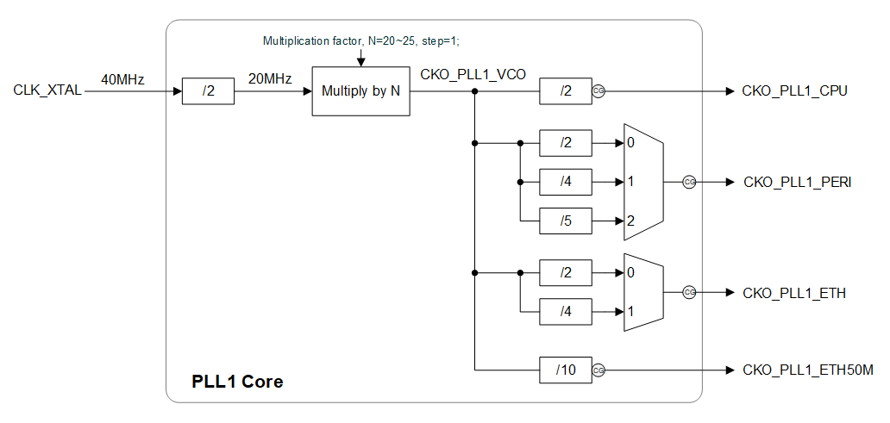
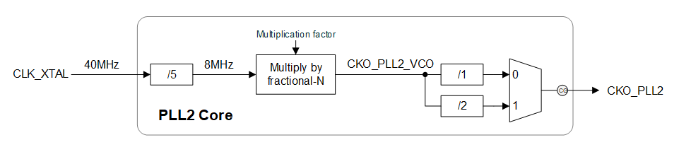

时钟管理
概述
RTL87x2G 支持多种时钟源，系统和外设模块可以选择不同的时钟源，实现需要的时钟频率。
本文介绍 RTL87x2G 芯片的时钟配置方法，主要包括以下几部分：
支持选择的时钟源：低速 32KHz 时钟，高速 40MHz 时钟，PLL 时钟。
不同模块的时钟配置示例。
时钟配置相关的接口。
时钟配置步骤如下：
时钟源的频率配置。
系统和外设模块选择使用的时钟源。
系统和外设模块配置需要的分频，输出时钟。
备注
一个模块修改时钟源的频率可能影响其他使用相同时钟源的模块的时钟。
时钟源介绍
不同时钟源对各个模块的支持情况如下。
Clock Source |
CPU |
FMC |
RTC |
QDEC |
WDT |
TRNG |
Segment LCD |
Display |
SDHC |
PKE |
Ethernet |
USB |
UART |
I2C |
Timer |
Enhanced Timer |
IR |
SPI0 Master |
SPI0 Slave |
|---|---|---|---|---|---|---|---|---|---|---|---|---|---|---|---|---|---|---|---|
32KHz Clock |
× |
× |
√ |
√ |
√ |
√ |
√ |
× |
× |
× |
× |
× |
× |
× |
√ |
× |
× |
× |
× |
40MHz Clock |
√ |
√ |
× |
× |
× |
× |
× |
√ |
√ |
√ |
× |
√ |
√ |
√ |
√ |
√ |
√ |
√ |
√ |
PLL Clock |
√ |
√ |
× |
× |
× |
× |
× |
√ |
√ |
√ |
PLL1 |
√ |
× |
× |
√ |
√ |
√ |
√ |
√ |
低速 32KHz 时钟
低速的 32KHz 时钟在 DLPS 模式下仍然保持。
32KHz 时钟源的频率不可以改变。
高速 40MHz 时钟
高速的 40MHz 时钟无法在 DLPS 模式下保持。
40MHz 时钟源的频率不可以改变。
极速 PLL 时钟
极速的 PLL 时钟无法在 DLPS 模式下保持。
PLL 时钟源的频率可以改变。
PLL1 时钟
PLL1 时钟的范围是 400M - 500MHz，步长是 20MHz。目前默认是 500MHz。
PLL1 时钟输出如下图所示，PLL1 时钟源频率为 CKO_PLL1_VCO。

PLL1 时钟输出
{kind=link}
PLL1 可以输出四个时钟，其输出频率由 CKO_PLL1_VCO 产生。
CKO_PLL1_CPU： 只可以作为CPU和 FMC 的时钟源，通过 CKO_PLL1_VCO 分频 1/2 得出。
CKO_PLL1_PERI：可以作为大部分外设的时钟源，通过 CKO_PLL1_VCO 分频 1/2，1/4，1/5 得出。
CKO_PLL1_ETH： 只可以作为以太网的时钟源，CKO_PLL1_VCO（固定为 500MHz） 分频 1/2，1/4。
CKO_PLL1_ETH50M：只可以作为以太网的时钟源，CKO_PLL1_VCO（固定为 500MHz） 分频 1/10。
PLL2 时钟
PLL2 时钟的范围是 80M - 240MHz。目前默认是 160MHz。
PLL2 时钟输出如下图所示，PLL2 时钟源频率为 CKO_PLL2_VCO。

PLL2 时钟输出
{kind=link}
PLL2 只输出一个时钟，其输出频率由 CKO_PLL2_VCO 产生。
CKO_PLL2：可以作为 CPU，FMC 和 Peripheral 的时钟源，通过 CKO_PLL2_VCO 分频 1/1，1/2 得出。
时钟配置使用示例
CPU 和 FMC 时钟配置
CPU 时钟配置
CPU 时钟源默认为 40M 时钟，为提升时钟频率可以选择 CKO_PLL1_CPU 和 CKO_PLL2 作为时钟源。CPU 时钟最大可配置为 125MHz。
CPU 需要调用
pm_cpu_freq_set()配置 CPU 时钟。CPU 配置 125M 时钟。
uint32_t actual_mhz = 0; pm_cpu_freq_set(125, &actual_mhz);
备注
接口里面自动实现如下配置，PLL1 Clock 选择 500MHz，CKO_PLL1_CPU 为 250MHz。 CPU 选择CKO_PLL1_CPU 为时钟源，divider 为 1/2。
FMC 时钟配置
FMC 时钟默认为 40M 时钟源，为提升时钟频率可以选择 CKO_PLL1_CPU 和 CKO_PLL2 作为时钟源。
FMC 需要根据具体的模块，选择对应的接口。下面以 Flash Nor 为例。
Flash 需要通过调用
fmc_flash_nor_clock_switch()根据具体的 Flash Nor ID 配置时钟。Flash Nor 选择 FLASH_NOR_IDX_SPIC0 ID，时钟配置为 160MHz。
uint32_t actual_mhz = 0; fmc_flash_nor_clock_switch(FLASH_NOR_IDX_SPIC0, 160, &actual_mhz);
备注
接口里面自动实现如下配置，PLL2 Clock 选择 160MHz，CKO_PLL2 为 160MHz。SPIC0 选择CKO_PLL2 为时钟源。
Peripheral 时钟配置
以太网时钟配置
使用以太网时，PLL1 Clock 固定为 500MHz。
以太网时钟源只能选择 CKO_PLL1_ETH（125MHz，250MHz）或者 CKO_PLL1_ETH50M（50MHz）。
以太网需要通过调用
pm_ethernet_freq_set()配置选择的时钟源的频率。以太网时钟频率配置 125MHz（只能选择 50MHz，125MHz，250MHz）。
pm_ethernet_freq_set(CLK_PLL1_SRC, 125, 125);
备注
接口里面自动实现如下配置，PLL1 时钟选择 500MHz，CKO_PLL1_ETH 为 125MHz。参数 required_mhz 仅供记录。
Timer 时钟配置
Timer 的时钟源可以选择 32KHz 时钟，40MHz 时钟，PLL1 时钟的 CKO_PLL1_PERI，PLL2 时钟的 CKO_PLL2。
目前接口不支持修改 PLL1 和 PLL2 的时钟频率，PLL1 时钟频率固定为 500MHz，PLL2 时钟频率固定为 160MHz。CKO_PLL1_PERI 只能在 100MHz，125MHz，250MHz 中选择。
Timer 需要通过调用
pm_timer_freq_set()配置选择的时钟源的频率。Timer 配置 CKO_PLL1_PERI 的频率为 250MHz。
pm_timer_freq_set(CLK_PLL1_SRC, 250, 125);
备注
接口里面自动实现如下配置，PLL1 时钟选择 500MHz，CKO_PLL1_PERI = 250MHz。参数 required_mhz 仅供记录。
Timer 通过调用
TIM_StructInit()和TIM_TimeBaseInit()，选择 CKO_PLL1_PERI 为时钟源，divider 为 1/2，最终输出频率为 125MHz。TIM_TimeBaseInitTypeDef TIM_InitStruct; TIM_StructInit(&TIM_InitStruct); TIM_InitStruct.TIM_ClockSrc = CK_PLL1_TIMER; TIM_InitStruct.TIM_SOURCE_DIV = TIM_CLOCK_DIVIDER_2; TIM_TimeBaseInit(TIMER_NUM, &TIM_InitStruct);